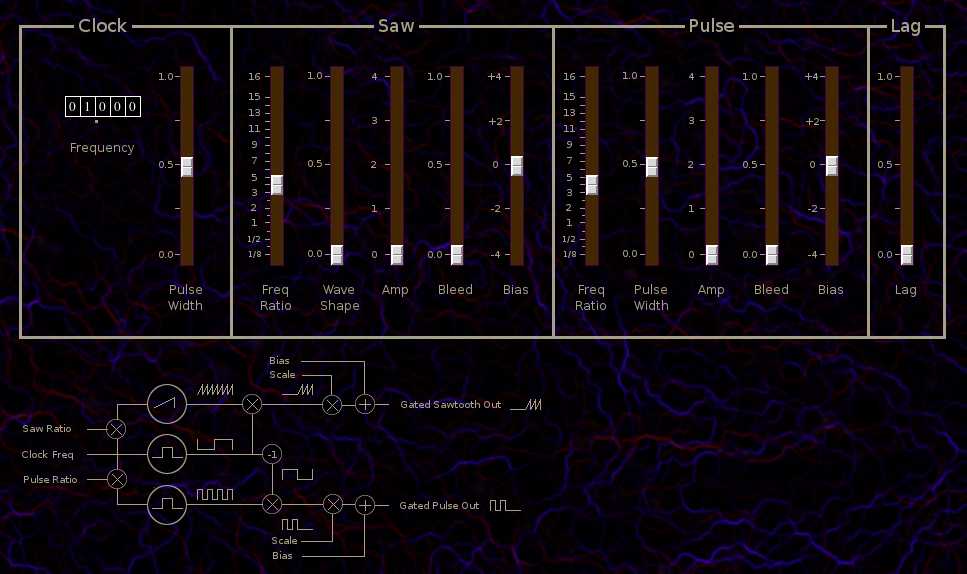

Lfo2

| Home | Contents | Synth Catalog | Previous: LFO1 | Next: LFO3 |
LFO2 is a switching LFO which alternates between sawtooth and pulse signals. The switching clock, sawtooth and pulse generators, may have different frequencies, producing a wide range of complex periodic signals.
Clock
Frequency Switching clock frequency tumbler
Pulse Width Clock signal pulse width.
Saw
Freq Ratio Frequency ratio of sawtooth relative to clock frequency.
Wave Shape Sawtooth wave shape, between sawtooth and triangle.
Amp Sawtooth amplitude.
Bleed Amount of sawtooth which bleeds through switch.
Bias Fixed amount added to sawtooth signal.
Pulse
Freq Ratio Frequency ratio of pulse relative to clock frequency.
Wave Width
Amp Pulse amplitude.
Bleed Amount of pulse which bleeds through switch.
Bias Fixed amount added to pulse signal.
Lag
Lag Lag time added to combined signal.
Buses
outbusSaw Sawtooth output
outbusPulse Pulse output
LFO2 Parameters
- clkFreq, Switch clock frequency (0,99.999)
- clkPw, switching clock pulse width (0,1)
- sawRatio, sawtooth frequency ratio
- sawSlew, sawtooth waveform (0,1)
- sawAmp, sawtooth amplitude (0,4)
- sawBleed, sawtooth signal bleed (0,1)
- pulseRatio, pulse frequency ratio
- pulseWidth, pulse width (0,1)
- pulseAmp, pulse amplitude (0,4)
- pulseBleed, pulse signal bleed (0,1)
- sawBias, fixed value added to sawtooth (-4,+4)
- pulseBias, fixed value added to pulse (-4,+4)
- lag, lag time (0,1)
| Home | Contents | Synth Catalog | Previous: LFO1 | Next: LFO3 |